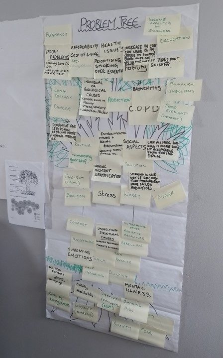

Evidence
Data and dialogue
Six forms of evidence, each produced by a different method, each with its provenance attached. Diverse forms of evidence are the foundation for exchange between community actors, service providers, researchers and policy advocates — the real value lies in the shared understanding that follows.
We present evidence on the cost of smoking during the cost-of-living crisis, working in the rural North-East of Scotland where high levels of deprivation are measured on multiple fronts. We ran a participatory action research demonstration study to convene community experts to understand local health priorities, to understand health issues from different perspectives, and to generate new data on them. Community and data experts built shared capabilities in PAR tools, techniques and practical skills together.
“Engaging technical, scientific experts, programme managers, decision-makers and the public to collectively weigh various types of evidence … in collaborative analysis of policy options.”
“No means to break the cycle”
We mapped the convergence of rising financial stress and increased availability of smoking products in communities. The Problem Tree tool was used to unpack the topic from different perspectives and systematise subjective experience into collective knowledge.

Smoking as a social problem
Analysis of routine and administrative data alongside population health indicators, disaggregated by wealth, education and other social markers. Taking an intersectional approach, we set out to understand smoking and smoking-related illness in context.

“The individual is a grain of sand”
Services did not appear to be immediately accessible in the under-served communities where we worked. We mapped relationships and interactions between actors and institutions, and explored how individual willpower needs to be met with accessible services.

Questions the community asked
We ran rapid reviews on topics that surfaced through community dialogue rather than topics set in advance: whether hypnosis works for cessation, what the evidence says about e-cigarettes, and how to talk about poverty in research based in under-served communities.
Lived experience, photographed
Community researchers photographed the topics as they exist in their own lived and physical environments, then developed the captions collectively to describe what the images convey.

The future we want
A collective action reflection, representing movement towards a desired goal through a series of interconnected steps. We reviewed alternative courses of action and appraised interventions for feasibility and acceptability, including cultural barriers.